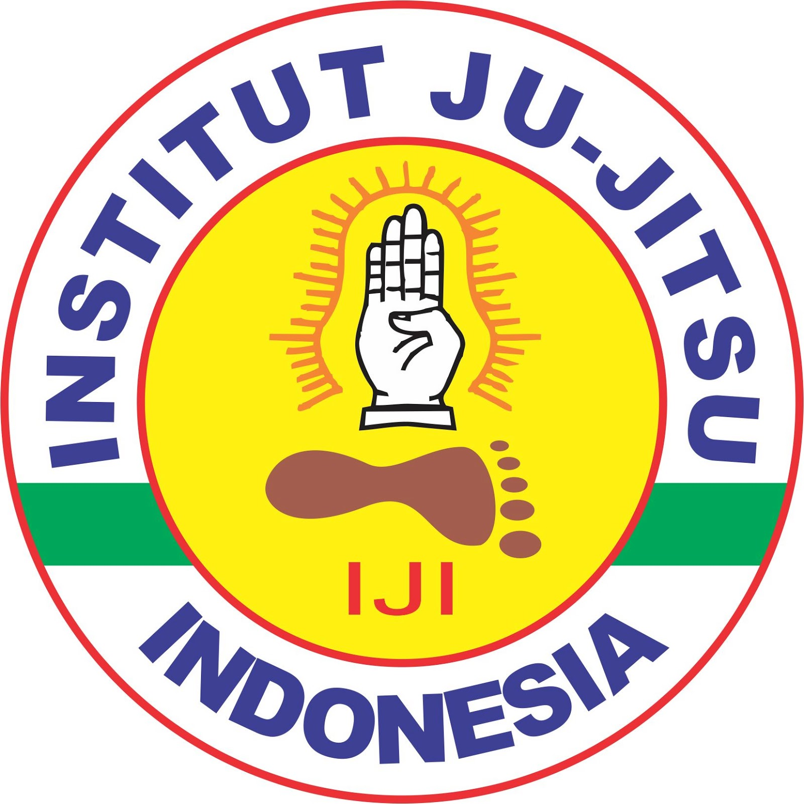

Sejarah Institut Ju-Jitsu Indonesia (IJI)
Jujutsu (bahasa Jepang: jūjutsu; juga jujitsu, ju jutsu, ju jitsu, atau jiu jitsu) adalah
nama dari beberapa macam aliran bela diri dari Jepang. Tidaklah betul jika dikatakan bahwa Jujitsu mengacu pada
satu macam bela diri saja. Jujitsu pada dasarnya adalah bentuk-bentuk pembelaan diri yang bersifat defensif dan
memanfaatkan “Yawara-gi” atau teknik-teknik yang bersifat fleksibel, dimana serangan dari lawan tidak dihadapi
dengan kekuatan, melainkan dengan cara “menipu” lawan agar daya serangan tersebut dapat digunakan untuk mengalahkan
dirinya sendiri.
Bangsa Jepang selama berabad-abad telah menciptakan beramacam-macam bela diri, yang sebagian besar masih ada hingga kini.
Salah satu bela diri Jepang yang tertua adalah Jujutsu, yang kadang-kadang dilafalkan oleh orang non Jepang sebagai
Ju-jitsu atau Jiu-jitsu.
Seni bela diri ini diciptakan oleh para prajurit Samurai sejak tahun 880 – 1868 M, dan sampai sekarang masih dianggap
sebagai seni bela diri yang sangat efektif untuk sarana pembelaan diri, terutama bagi para penegak hukum.
Bahkan jajaran Keisatsukai (Kepolisian Jepang), NYPD (Kepolisian New York), dan L.A.P.D.
(Kepolisian Los Angles,AS) masih mengajarkan Jiujitsu sebagai bagian dari pembekalan anggotanya dalam bertugas. Para anggota
tentara Amerika, Jepang, dan Indonesia juga mempelajari Jujitsu untuk memperkaya materi H.T.H.C. (Hand To Hand Combat)
dalam persiapan tugas di lapangan.
Beladiri Jujitsu masuk ke Indonesia saat masa pergolakan perang dunia II sekitar tahun 1942. Dibawa oleh seorang tentara
Jepang yang bernama Ishikawa. Disiplin Jiu-jitsu yang ia bawa berasal dali aliran Kyushin Ryu. Ishikawa kemudian mewariskan
ilmunya kepada Raden Sutopo (Ponorogo) yang kemudian diturunkan kepada kelima muridnya yaitu Firman Sitompul, Sitompul, Heru Nurcahyo,
Bambang S dan Heru Winoto. Kelima murid inilah yang menjadi cikal bakal tumbuh dan berkembangnya Jujitsu di Indonesia.
Sebelum dibentuk organisasi “Institut Jiu-Jitsu Indonesia (IJI)”, Jiujitsu dikenal dengan sebutan perkumpulan bela diri
“Bantaran Angin” yang berpusat di Ponorogo. Untuk mengembangkan Jiu-jitsu ke seluruh Indonesia, akhirnya pusat pengembangan
Jiu-jitsu dipindahkan ke Jakarta. Disinilah dibentuk sebuah organisasi resmi dan berbadan hukum yang bernama Institut Jiu-Jitsu
Indonesia (IJI), sekitar 8 Desember 1981.
Ditahun yang sama, diadakan demonstrasi beladiri Jiu-Jitsu di Perguruan Tinggi Ilmu Kepolisian Jakarta. Akhirnya Jiu-jitsu berhasil
mendapatkan penghargaan serta pengakuan dari Staf kedutaan besar Jepang. Kini, Institut Jiu-Jitsu Indonesia telah menjadi anggota
ke-12 World Council of Jiu-Jitsu Organization yang berpusat di London yang menjadikan Jiu-Jitsu sebagai beladiri resmi POLRI
dan berbagai kesatuan militer seperti KOPASSUS, KOSTRAD, PASPAMPRES, Marinir dan lainnya. Bahkan Jiu-Jitsu juga dikembangkan
di sekolah-sekolah, instansi swasta maupun instansi pemerintah dan perguruan tinggi.
© Kharisma Dinda Amareta | 21104410055 | Teknik Informatika 3B